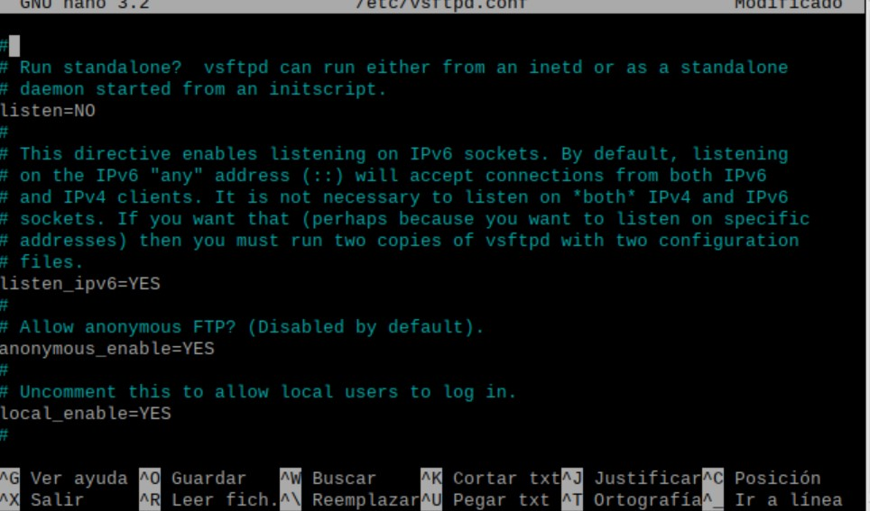
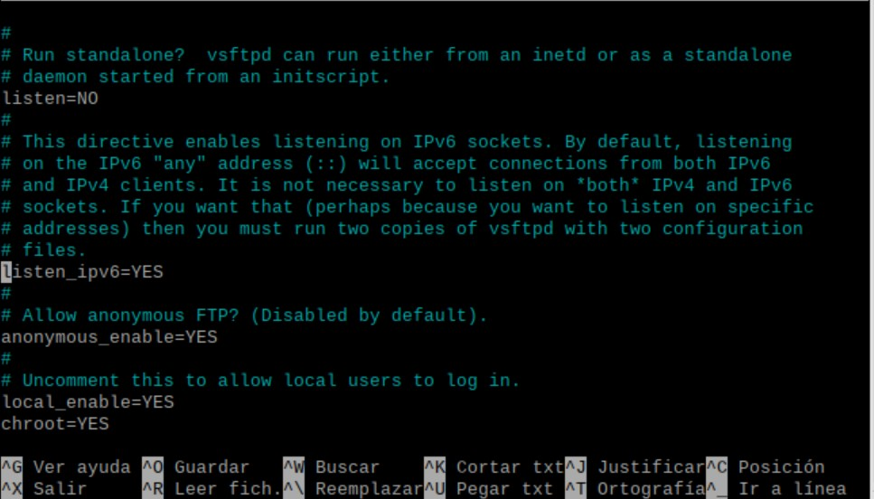
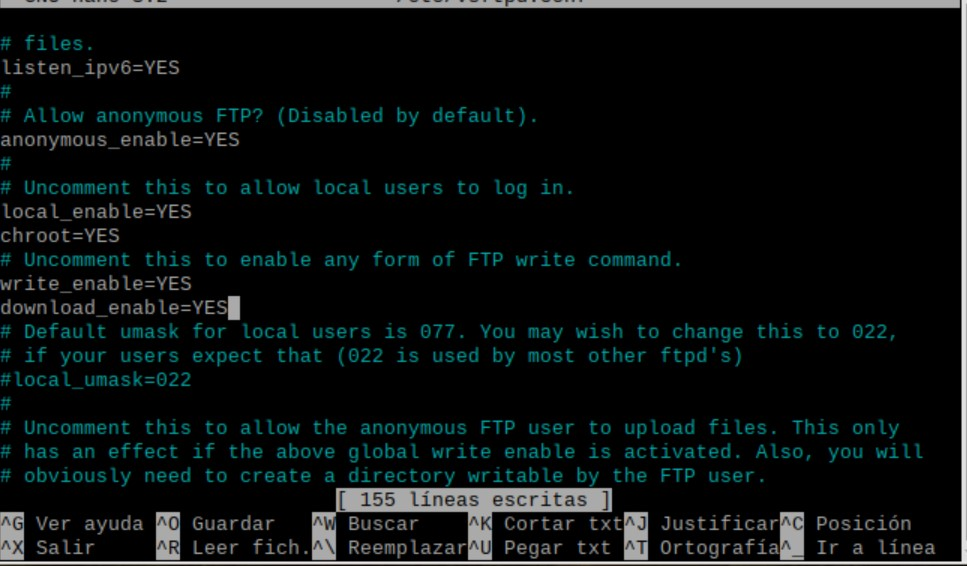
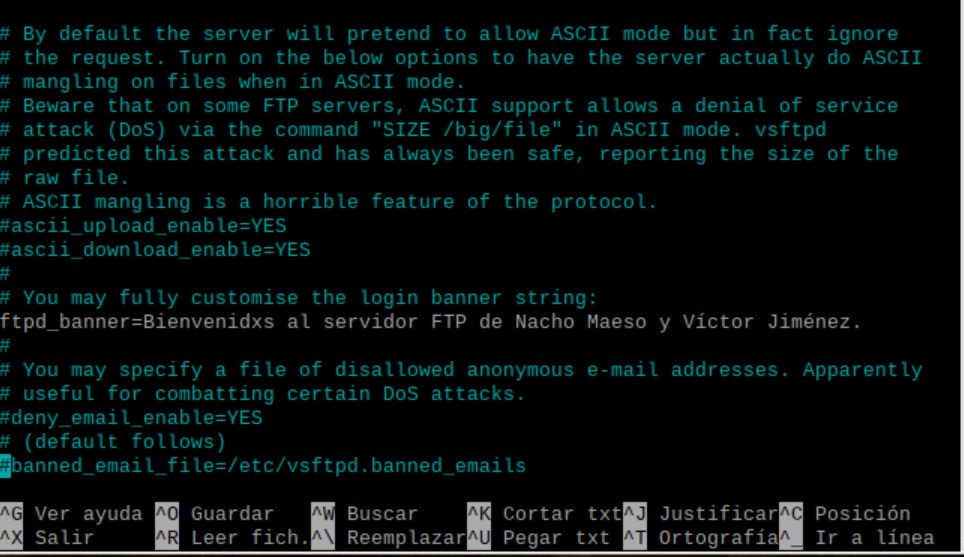
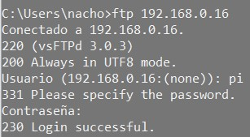
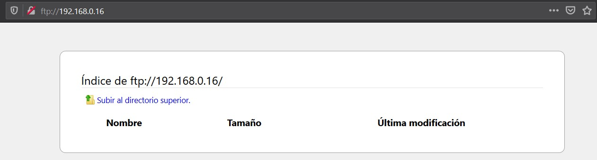

FTP
Para que nuestro servidor ftp anónimo para descargas, nos debemos de meter con nano en, "/etc/vsftpd.conf", y desde ahí, ponemos un "YES" en "anonymous_enable"
Para limitar el acceso a usuarios del sistema, debemos añadir la línea de código "chroot=YES".
Y para que se puedan descargar y subir archivos, simplemente debemos añadir la línea de código "download_enable=YES", ya que la línea de justo arriba ya estaba en "YES"
Para meternos en modo pasivo desde Windows, debemos de conectarnos al
servidor con "ftp servidor" y después poner "quote pasv", y parea hacerlo desde
Linux, simplemente debemos añadir un "-p" a "ftp servidor", como se muestra en
la imagen.
(El "-A" que aparece, es para logearnos como anónimos).
Para añadir un mensaje de bienvenida, debemos bajar hasta que veamos lo de la imagen, le quitamos el "#" y le ponemos lo que queramos que salga de bienvenida.
Y ya tendríamos listo nustro servidor FTP, les muestro también una imagen donde se ve el servidor en modo consola y modo gráfico desde el navegador.
